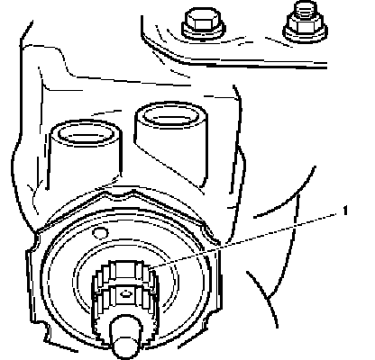
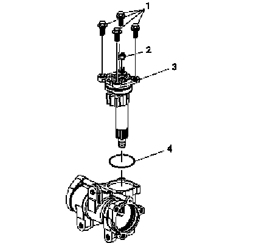

Steering Gear Pitman Shaft and Housing Cover Replacement - Off Vehicle
Steering Gear Pitman Shaft and Housing Cover Replacement - Off Vehicle
Disassembly Procedure

1. Remove the nut (3).
2. Remove the lock washer (2).
3. Clean the exposed end of the pitman shaft.
4. Clean the steering gear housing (1).
5. Use a wire brush to clean the pitman shaft splines.

Important: The pitman shaft will not clear the housing if it is not centered.
6. To center the stub shaft:
1. Rotate the stub shaft (1) with a wrench from stop to stop.
2. Count the number of turns.
3. Rotate the stub shaft back 1/2 of the total amount of turns.

Important: When removing the pitman shaft assembly, the pitman arm and its components may fall from the steering gear housing. Support the pitman arm and its components while removing the pitman shaft assembly.
7. Remove the pitman shaft cover bolts (1) from the pitman shaft and cover assembly (3).
Remove the lash adjuster nut (2) from the pitman shaft and cover assembly (3).
8. Remove the pitman shaft and cover assembly (3).
9. Remove the pitman shaft cover O-ring (4) from the steering gear housing assembly.
Assembly Procedure
1. Install the new pitman shaft cover O-ring (4).
2. Install the pitman shaft and cover assembly (3) onto the steering gear housing assembly.
3. Install the lash adjuster nut (2) onto the pitman shaft and cover assembly (3)
Notice: Refer to Fastener Notice.
4. Install the pitman shaft cover bolts (1) onto the pitman shaft and cover assembly (3).
Tighten the pitman shaft cover bolts to 62 N.m (46 lb ft).
5. Install the lock washer (2).
6. Install the nut (3).
7. If necessary adjust the pitman shaft. Refer to Steering Gear Pitman Shaft Over-Center Preload Adjustment - Off Vehicle.